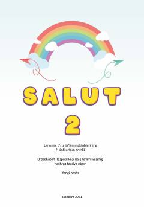

FT2-sinf o'quvchilari uchun fransuz tili fani bo'yicha darslik.
Ushbu darslik umumiy oʻrta ta'lim maktablarining 2-sinf o'quvchilariga fransuz tilini o'rgatish uchun mo'ljallangan. Kitobda alifbo, harflarning yozilish qoidalari, fransuzcha mashqlar hamda qiziqarli topishmoq va qo'shiqlar o'rin olgan.